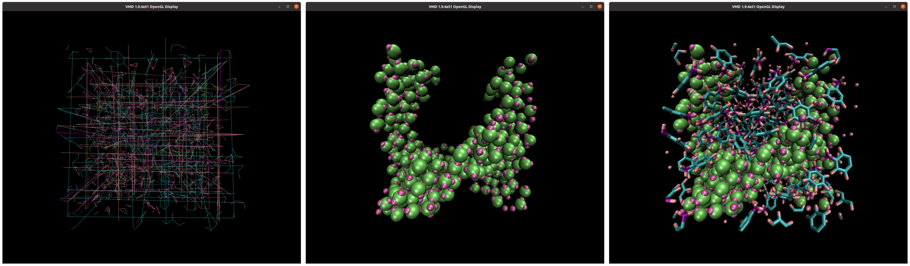
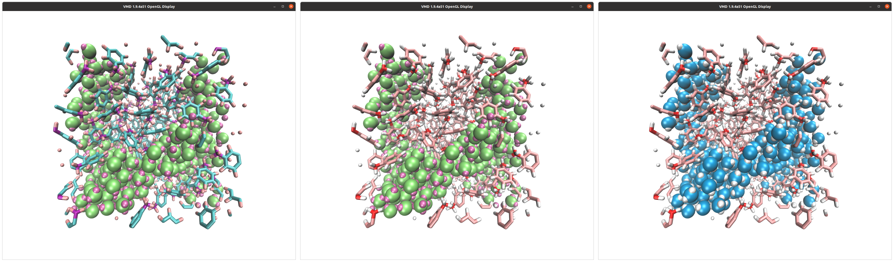
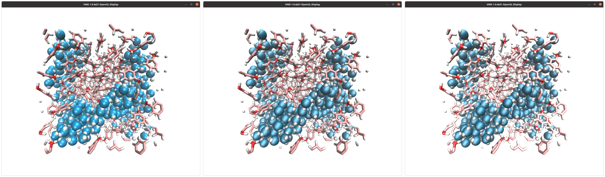
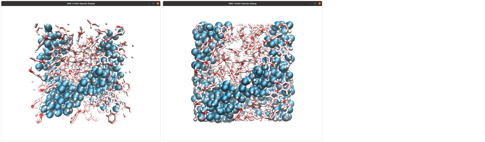

To change the colours, go to Graphics → Colors. Click on Display, then Background, and choose white instead of black. Then click on Name, and 5 (this is the oxygen atoms), and choose red. Do the same for 4 (carbon → pink), 3 (hydrogen → white), 2 (hydrogen → white). These three colours are standard for oxygen, carbon, and hydrogen. To mark the difference between the water and the toluene, I choose a different colour for atoms of type 1, and entered manually the values 0 0.6, 0.88 in the RGB boxes.

An often neglected aspect is the texture of the representation, given by the material. Finding the right degree of shininess is often difficult, but its really important if you want a good looking poster or presentation. In the Representations windows, you can choose among several materials. I prefer to create my own. To do so, go in Graphics → Materials. Click on Opaque (this is the one used by default), then hit Create New twice. Two new materials should have appeared, called something like Material23 and Material24. Rename them to MWater and MToluene. For MWater, change Diffuse, Specular, and Shininess, to 0.43, 0.48, and 0.35, respectively. Then, from the Representations windows, change the Material from Opaque to MWater for the two representations that concern water molecules. Do the same for toluene, with values of 0.78, 0.33, and 0.32 for MToluene.

Currently the view is perspective, which is not the best choice if you want a square image of your system. Go in Display, and click Orthographic. You can zoom with the mouse wheel. That is it, the system is ready to be rendered in high resolution.

You can also visualize the borders of your box by typing in the VMD' terminal:
pbc box -center origin -color black -width 2To generate high resolution image, go in File → Render. Choose Tachyon, add -res 1000 1000 in the Render command cell, and hit Start Rendering. A high resolution image has been created by VMD. You can remove the borders using GIMP or Inkscape for example.
To generate a high resolution movie, go in Extension → Vizualisation, and Movie Maker. If you hit Make Movie directly, the movie generated by VMD will be of poor quality. Instead, we are going to generate a sequence of high resolution images, and assemble these images ourselves. Go in Movie Settings, first hit Trajectory (so the movie will show the system evolving in time, and not rotating on itself), then also uncheck Delete image files. In Rendered, choose Tachyon, then Make Movie. When its done, you can close VMD. If you don't want do redo these steps every time, you can save the VMD state by clicking File → Save vizualisation state. From the terminal, assemble the image into a movie by typing:
ffmpeg -r 60 -i untitled.%05d.ppm -vcodec libx264 -crf 0 -pix_fmt yuv420p myvideo.mp4You may receive the following error width not divisible by 2 (1363x1134). If that's the case, you can remove one line of pixel with the command:
for file in untitled.*.ppm; do convert $file -crop 1362x1134+0+0 $file; doneTo convert the video in webp, for web integration, use:
ffmpeg -i myvideo.mp4 -vcodec libwebp -filter:v fps=fps=20 -lossless 1 -loop 0 -preset default -an -vsync 0 myvideo.webpThe result should look like this video.
Click here if you are looking for help with your project, if you want to support me (for free or not), or if you have any suggestions for these tutorials.